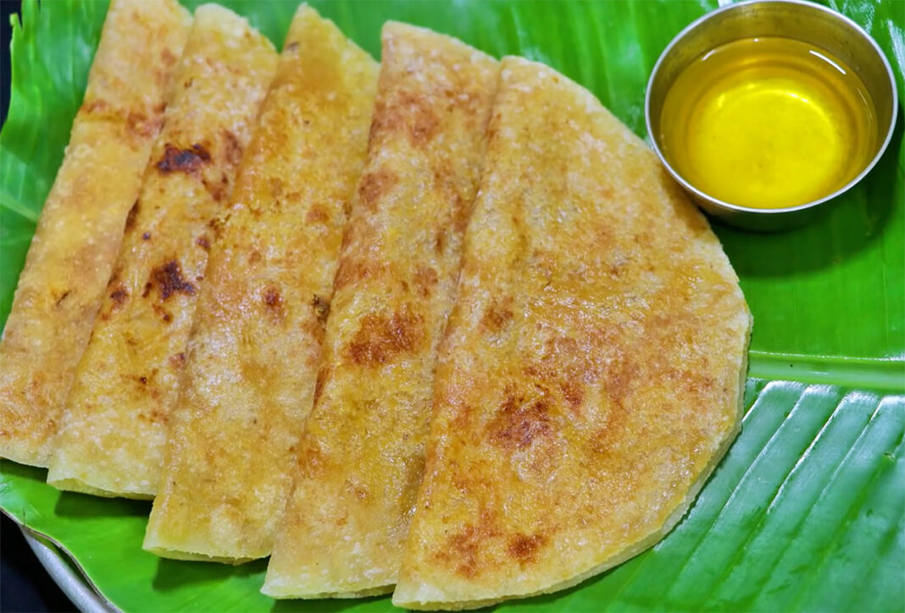

Kai Obbattu Recipe

Ingredients for kanaka (outer cover):
- 2 cup maida or all purpose flour
- 3/4 cup water
- 6 tbsp coconut oil or cooking oil
- A pinch of food colour or turmeric powder
- Salt as per your taste
Ingredients for hoorana (stuffing):
- 4 cup grated coconut
- 2 cup powdered jaggery
- 2 cardamom
Instructions for making kayi holige or kayi obbattu recipe:
Lets make Kai Obbattu
- To begin with let us prepare kanaka (dough for the outer cover). Sieve and take 2 cups of maida flour in a wide bowl. Add in salt and food colour (you can replace it with turmeric powder).
- Now add in water little by little and prepare a soft dough (much softer than chapathi dough). I have used 3/4 th cup of water.
- Now pour in coconut oil or any other cooking oil. Spread the oil all over the dough and rest it for 30 minutes.
- Meantime let us prepare hoorana or stuffing. Grind 4 cups grated coconut, 2 cups jaggery and cardamom until smooth without adding any water. First you can dry grind the coconut and then grind it along with the jaggery and cardamom. Transfer it to a kadai or big frying pan.
- Continue stirring until the excess water content is dried. You can also hear a hissing noise while stirring due to the water content. When the hissing noise reduces it is done. Switch off the stove.
- Wait until stuffing is warm. And make small lemon sized balls. The stuffing balls should be soft but stiff.
- Finish making all the balls and set it aside.
- Now make small lemon sized balls from the kanaka or dough for the outer cover. You can not really make the balls. You need to pinch and take a small portion and drop it on a plastic sheet or banana leaf.
- Next dust your fingers take a kanaka (dough for the outer cover) and place a hoorana (stuffing ball) over it.
- Slowly push the hoorana or stuffing inside and cover it evenly with the dough.
- Apply the flour generously and roll it into a very thin holige or obbattu.
- Heat a Iron pan or tava and transfer the rolled holige or obbattu on to the tava carefully.
- Wait until you see bubbles here and there.
- And then flip it and cook on the other side as well. When you see slightly brown patches here and there it is done. Enjoy Kayi holige or kayi obbattu or coconut pooran poli with ghee and enjoy!!